01 / KTU2023
Lituanie
Un premier échange à Kaunas.


KTU · Erasmus 3 souvenirs à ouvrir ↗
Ingénieur IA & développeur
Angers, France 2026
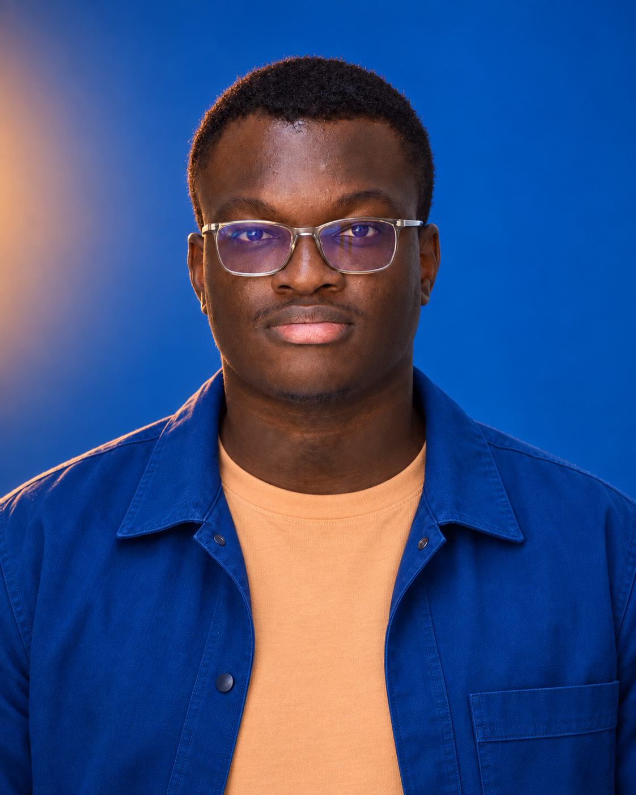
De Ouagadougou à Angers, de la formation d’ingénieur aux agents en production : mon parcours relie les données, le développement et les usages. Voici comment ces étapes se répondent.
Suivre le parcours01 — Apprendre
Après deux années de classes préparatoires à La Salle, à Ouagadougou, j’ai rejoint l’ESAIP à Angers pour me spécialiser en Big Data.
Deux échanges Erasmus, à KTU en Lituanie puis à RWU en Allemagne, ont aussi jalonné cette formation. En 2026, j’obtiens mon diplôme d’ingénieur.
La suite se joue sur le terrain : des systèmes de données chez Moov Africa aux assistants IA à l’ESSCA.
2022–2026 · Diplôme d'ingénieur, spécialisation Big Data, parcours anglophone.
RWU, Allemagne · 2024–2025
KTU, Lituanie · 2023
2020–2022 · Classes préparatoires à Ouagadougou, Burkina Faso.
Deux échanges Erasmus, et des souvenirs qui débordent des salles de cours.
Un premier échange à Kaunas.
KTU · Erasmus 3 souvenirs à ouvrir ↗
Puis Ravensburg-Weingarten, avec RWU.
RWU · Erasmus 3 souvenirs à ouvrir ↗
02 — Mettre en pratique
Des données aux assistants IA, mes expériences m’amènent à travailler sur toute la chaîne : préparer l’information, développer une application et la faire fonctionner en production.
2024
Moov Africa Burkina
Étude d’une architecture Data Lakehouse, données CDR et simulations de streaming.
Avril — juillet 2025
ESSCA · Stage
Outil RH utilisant le RAG et Microsoft Graph ; évolution et redéploiement d’ESSCABOT.
Sept. 2025 — fév. 2026
ESSCA · Projet de fin d’études
Architecture multi-assistants, API FastAPI, interface React et chat vocal en temps réel.
Avril 2026 — présent
ESSCA · Angers
Évolution d’ESSCABOT, RAG sur Azure AI Search, gestion des accès et suivi en production.
En entreprise, je développe pour des besoins concrets. Dans mes projets personnels, j’explore d’autres questions : ce qu’un agent retient, ce qu’il savait au moment de décider, et ce qu’il peut nous aider à accomplir.
Poursuivre l’exploration03 — Explorer
En parallèle du travail en production, j’explore la mémoire des agents, leurs décisions et les usages qu’ils rendent possibles.
PROJETS PERSONNELS & OPEN SOURCEUne mémoire qui survit
à la conversation.
Ce que l'agent savait.
Au moment où il a décidé.
D'autres façons de rendre l'IA utile.
Un agent Slack qui recherche des subventions sur Grants.gov, présélectionne les opportunités avec des filtres déterministes et prépare des brouillons à relire. Chaque résultat renvoie à sa fiche officielle.
Voir le dépôt ↗Un outil auto-hébergé qui extrait les compétences d'un CV PDF, collecte des offres sur les sites carrières et les classe localement par pertinence sémantique.
Voir le dépôt ↗Une application web et mobile d'aide à l'analyse technique des marchés, utilisant Mistral AI. Un projet à la croisée de la conception produit, de React et de l'IA.
Visages synthétiques. Préparation des données, entraînement et évaluation d'un modèle distinguant les visages réels des visages modifiés.
Activ’ESAIP. Conception du parcours de saisie d'un outil d'estimation des coûts de réseaux de chauffage urbain.
Design4Green. Une expérience web écoresponsable pour évaluer l'accessibilité des sites selon le RGAA.
04 — Hobbies
Le parcours ne tient pas qu’à un CV. Il y a aussi les images que je garde, les univers que j’explore et les moments que je prends pour moi.
Mon Pixel, et ce qui attire mon regard. Des moments pris au hasard, d’autres que je veux garder précisément. Un ciel, une lumière, un détail dans une journée ordinaire.
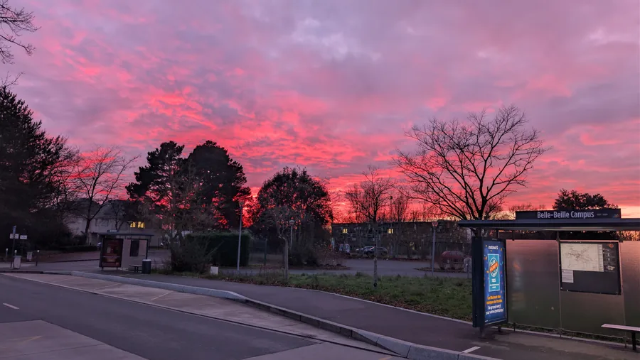
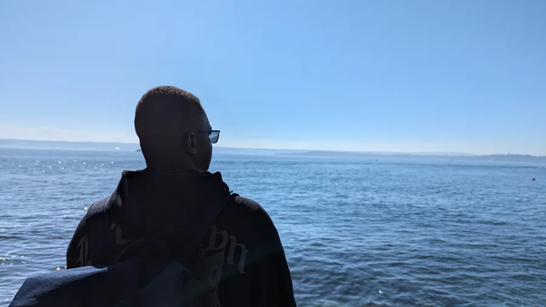
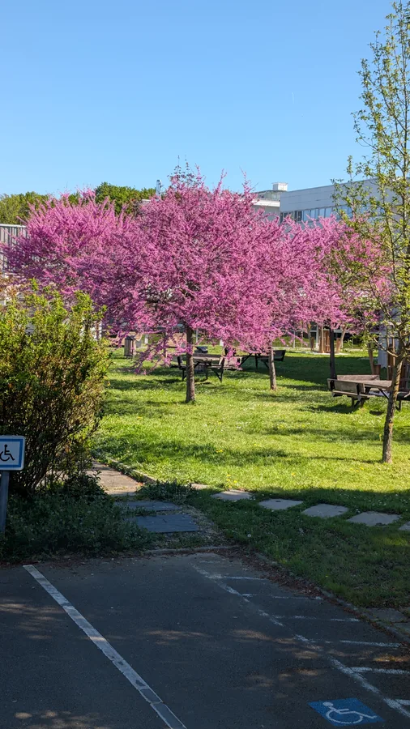
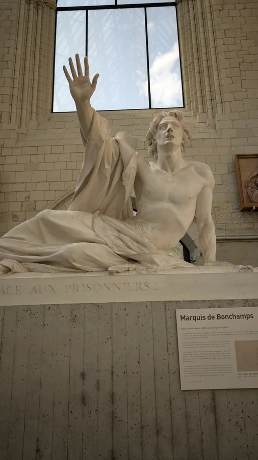
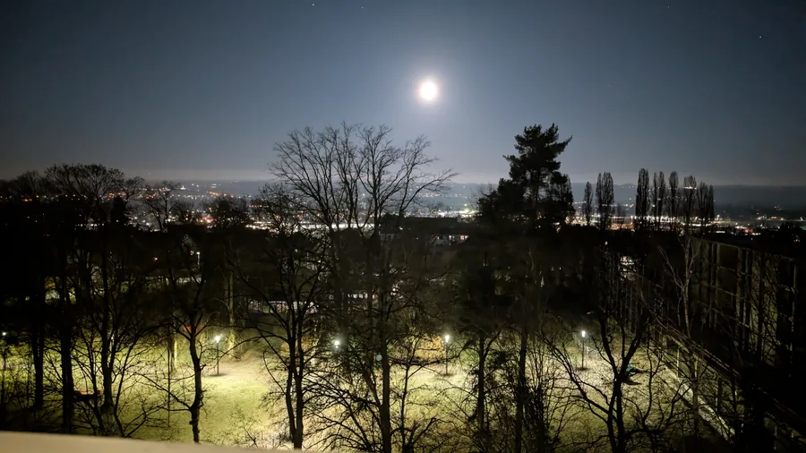
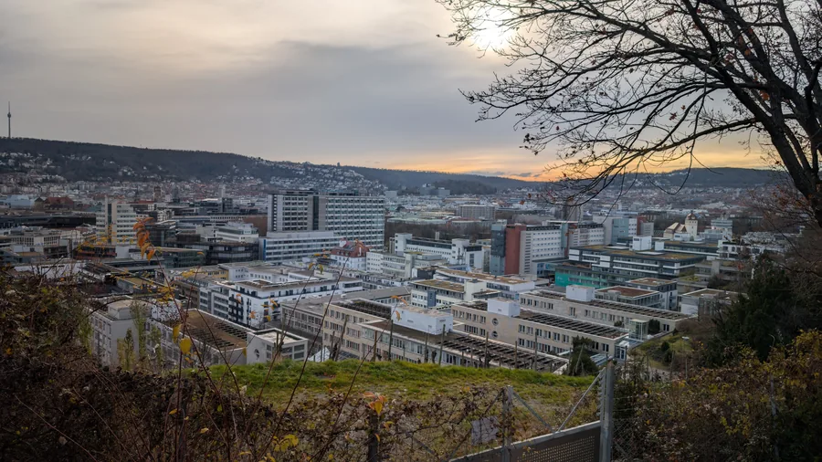
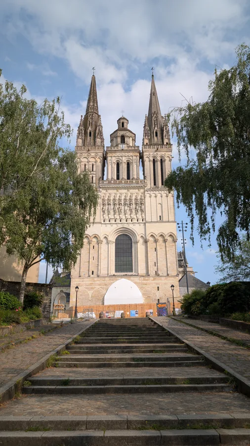
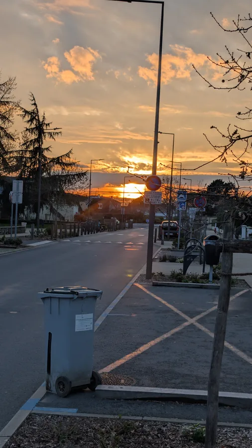
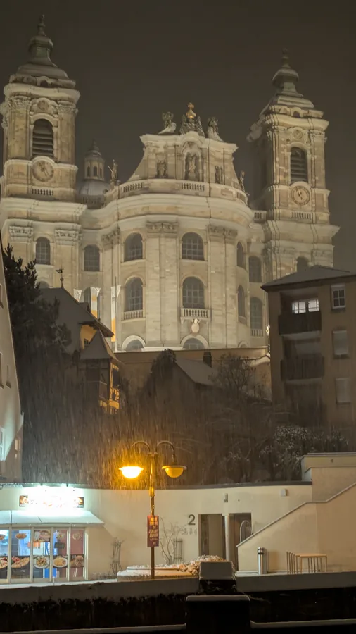
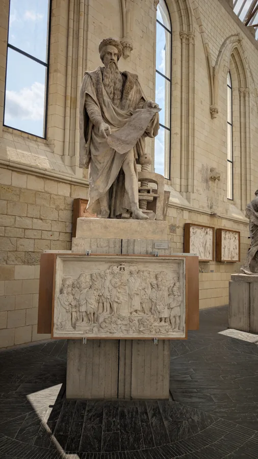
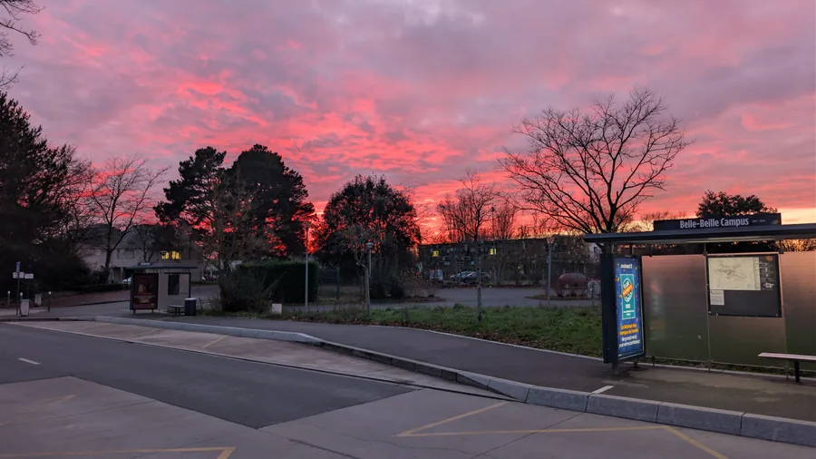
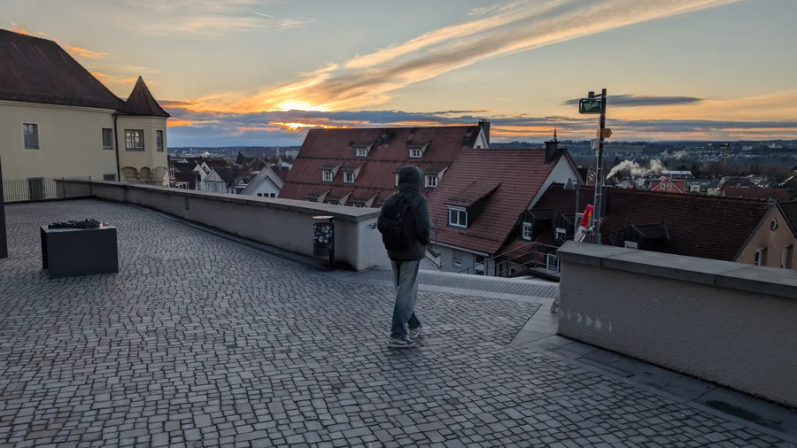
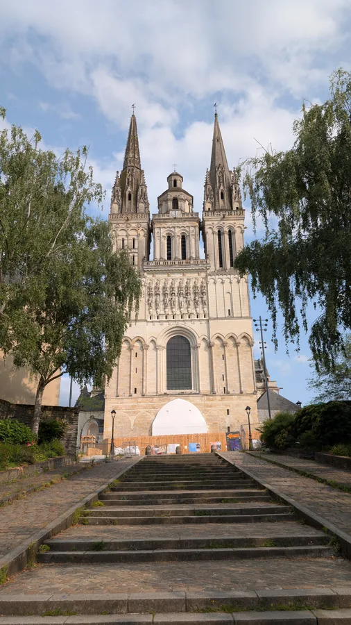
Le ciel en rose
Au Pixel · 19 décembre 2025Glisser pour parcourir · Cliquer sur une photo pour l’agrandir
FC 25, PGR × Devil May Cry, les mangas… D’autres univers dans lesquels j’aime passer du temps.
Côté console : la ROG Xbox Ally X.
Dans les marges de mes lectures.
« Le rêveur, s’il faut le définir en détail, n’est pas un homme, mais, savez-vous ? une espèce de créature du genre neutre. Il gîte la plupart du temps quelques part dans un coin inaccessible, comme s’il s’y cachait même de la lumière du jour, et, une fois retiré chez lui, il y est collé comme l’escargot, ou du moins il ressemble beaucoup, à cet égard, à ce curieux animal qui est à la fois animal et maison et qui s’appelle tortue. »
« Il suffit de fournir à l’esprit un alibi, si possible le plus généreux et le plus altruiste, pour que chacun se sente aussitôt en droit d’écraser son semblable. La conscience morale est bien ce masque dont Nietzsche se moque »
La musique fait aussi partie de mon quotidien.
Du temps pour moi, aussi à la salle.
Des projets, des détours,
et quelques instants à garder.
05 — Quelques instants
Derrière les expériences et les projets, il y a aussi ces moments : un diplôme, une échappée, un trajet.04 photographies · Cliquer pour agrandir ↗
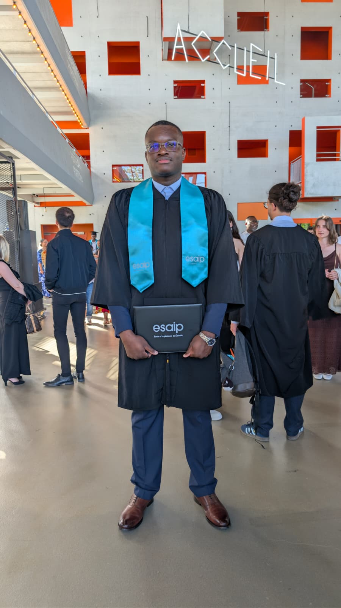
Remise de diplôme · ESAIP
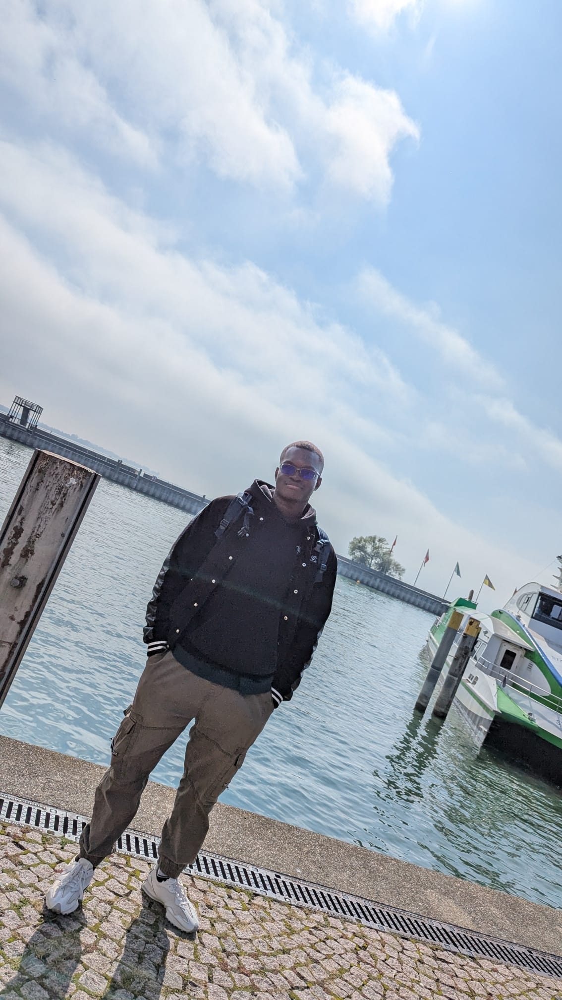
Au bord de l’eau
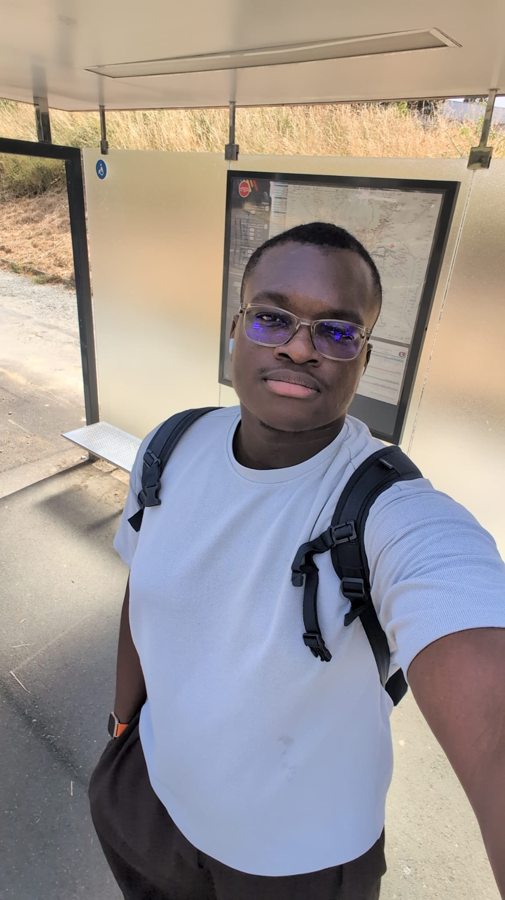
Un instant du quotidien
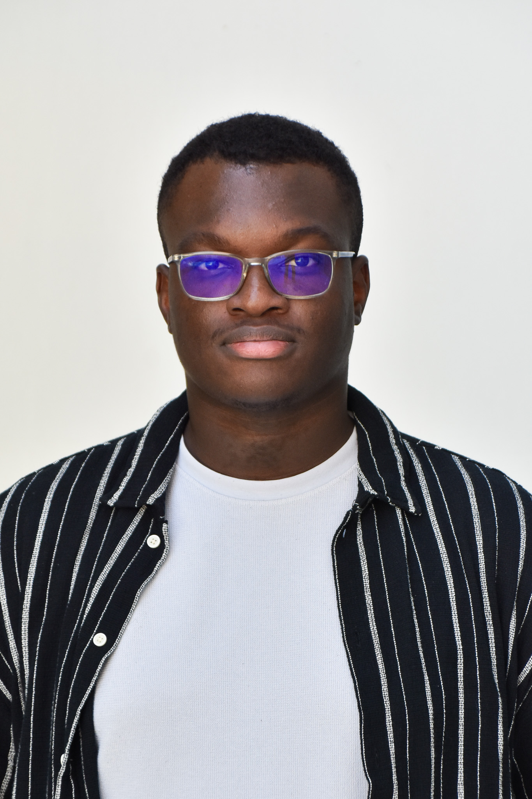
Portrait original